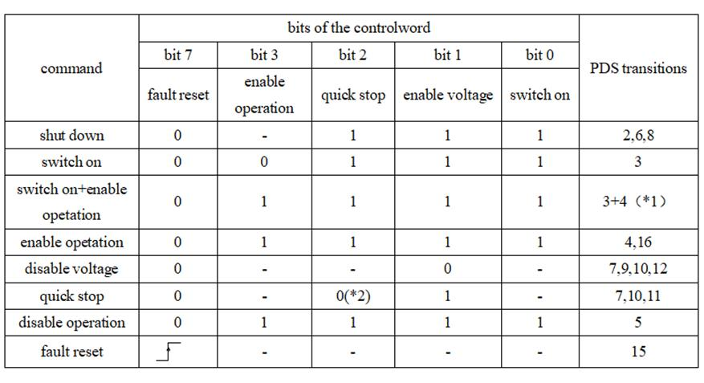
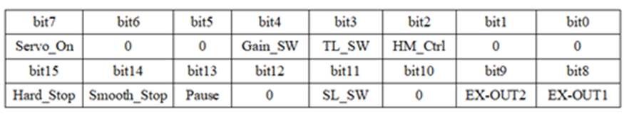

|
类型 |
轴参数 |
|
描述 |
驱动控制字，按位操作 必须设置正确的ATYPE（设置为65/66/67）以后才能操作这个参数。
对于EtherCAT驱动器， 对应数据字典0x6040 EtherCAT控制器ATYPE=65时控制字会根据WDOG/AXIS_ENABLE自动切换以使能驱动器，主要位操作如下图。具体位意义请查看对应驱动器手册。  对于Rtex驱动器 Rtex控制器控制字缺省自动设置，需要手动时先将DRIVE_CW_MODE设为1，不能随便修改，位意义如下图，详细说明请看松下Rtex手册的4-2-3章节。  |
|
语法 |
可读：var=DRIVE_CONTROLWORD(axis) 可写：DRIVE_CONTROLWORD(axis)=value axis：轴号 |
|
适用控制器 |
带EtherCAT接口或RTEX接口 |
|
例子 |
例一 EtherCAT SLOT_SCAN(0) IF NODE_COUNT(0)>0 THEN AXIS_ADDRESS(0)=1 ATYPE(0)=65 'EtherCAT总线位置控制 DRIVE_PROFILE(0)=0 'PDO设为0 DRIVE_CONTROLWORD(0)=128 '伺服错误清除 DELAY (100) DRIVE_CONTROLWORD(0)=6 '伺服shutdown DELAY (100) DRIVE_CONTROLWORD(0)=15 '伺服switch on ENDIF
例二 RTEX SLOT_SCAN(0) IF NODE_COUNT(0)>0 THEN AXIS_ADDRESS(0)=1 ATYPE(0)=50 'RTEX总线位置控制 DRIVE_PROFILE(0)=1 '伺服带IO DRIVE_CW_MODE=1 '手动设置控制字 DRIVE_CONTROLWORD(0)=128 '伺服使能 ENDIF |
|
相关指令 |